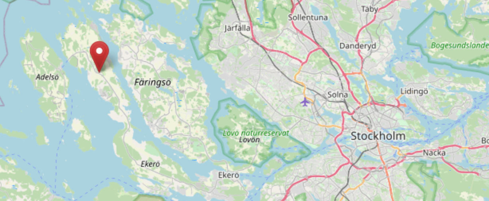

C & F
AUG 7
—
2021
SÄTTRA GÅRD, MUNSÖ SWEDEN

AUG 7
—
2021
SÄTTRA GÅRD, MUNSÖ SWEDEN
We're delighted that you've received our invitation, and found your way here!
We are very much looking forward to celebrating our wedding with you.
SÄTTRA GÅRD, MUNSÖ SWEDEN
Since the lockdown is much less restrictive when it comes to private gatherings, we've decided to host our wedding celebration at Carolines's parents' countryside estate - on Ekerö island outside of Stockholm.
In other words, fingers crossed that the restrictions let up - or at the very least, remain the same. Nevertheless, we'll be outside the whole day, and the bride and groom will do their utmost to get vaccinated in anticipation of the event. The plan from the swedish government is that everyone will be given the possibility to get vaccinated well before our date! 🤗
If we are forced to cancel the event, we will reach out to everybody that RSVP:ed and update the website.
We will start the day with some bubbly and mingling, after which there will be a short ceremony. During the rest of the day, we'll get to know each other by playing games, quizzes, after which we'll sit down for dinner together.
After dinner is over, the party will start. Our friends will DJ, you'll get to dance, hang out in the bar, or deep-talk in one of the lounge areas. Very much, choose your experience.
Unfortunately, the island does not have much to offer in terms of hotels, but is well connected by both roads and communal transport. When it comes to transport and living arrangements, we are recommending three options:
A bus is available to take you from the city center. The bus leaves from the central station's bus terminal, "Cityterminalen". The bus is scheduled to leave at 12:30 from the city, and a return bus is available at 1 AM from the party.
For those of you who wish to stay over with us out on the estate, we will be pitching two military tents with heaters housing 20 persons each. You're welcome to stay both the day before, and the day after. You'll be able to access the showers and bathrooms of the estate. First come, first serve! This option is available in the RSVP.
Further down on the Island there are quite a few AirBnB, but since it's a bit further away - we recommend driving or pre-booking a cab. We can help you out with the latter if you let us know.
It's swedish tradition to have toast masters for weddings. Our toast masters for the evening are Malin Ekman and Pontus Lundmark. If you wish to share a fond memory of us or give a short speech, please let our toast masters know at mulderwitasp2021@gmail.com 🤗
We have more than enough wordly possesions! Your presence is your gift to us.
Since we really want to get married with 100% certainty, we'll do so legally before our closest family before the wedding. This ceremony will thus be symbolic and short - giving us more time to focus on the party 🥳
Smart casual with a dash of summer! We do want to press that we'll be in the countryside. This means we'll mostly be on grass or gravel. So choose an attire that you're comfortable in!
Also, the evenings do get chilly, so bring a sweater!
You can RSVP by filling out this form or by sending us a mail to felix.mulder@gmail.com.
Best regards,
Caroline & Felix